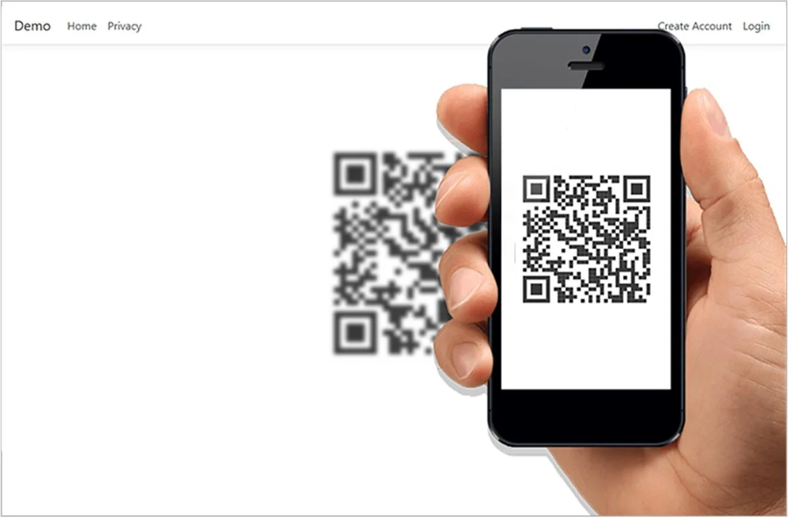
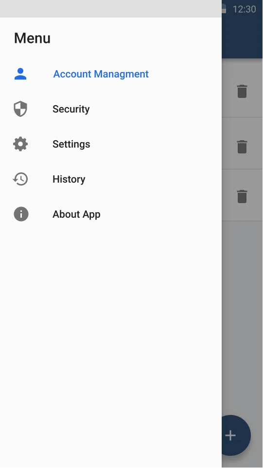
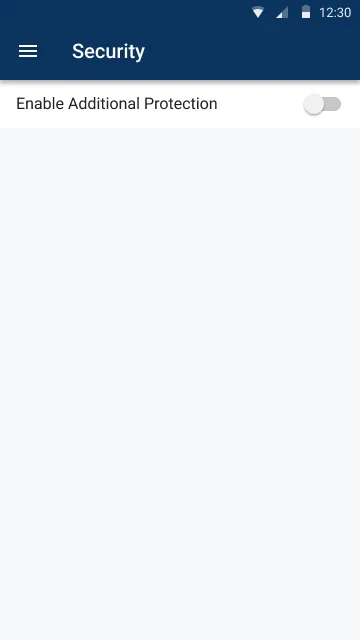
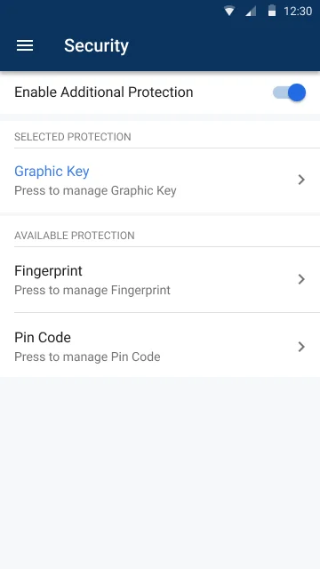
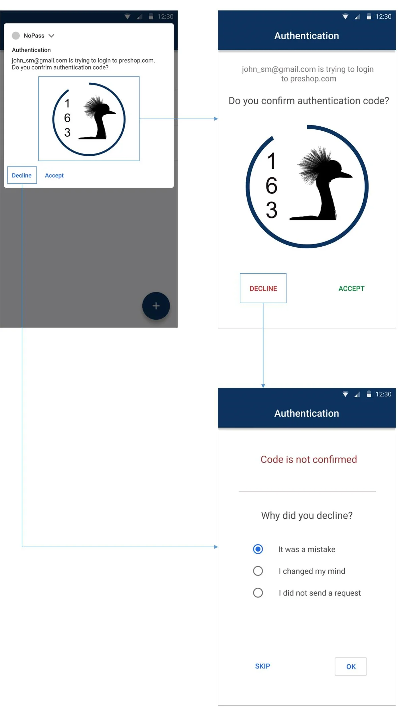
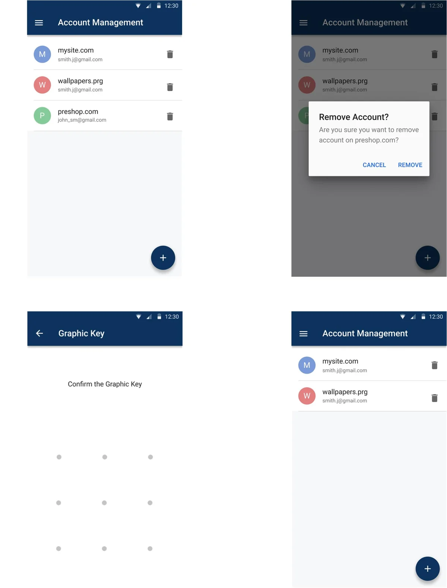

Explorar tópicos
As respostas arquivadas são preservadas em seu inglês original. A compatibilidade e as condições comerciais históricas precisam de confirmação atual.
PasswordFree MFA
What devices / operating systems currently support PasswordFree?
Windows XP, Vista, 7, 8, 8.1, 10
Mac OSX
iOS-based devices (iPhone / iPad)
Android-based devices (Phones / Tablets) Android 5.0 and above
*Due to security concerns, we cannot support any Windows version prior to Windows XP. Even though the PasswordFree app may still work with these versions, we recommend that you do not use them because they are not as secure as the supported versions.
A list of unsupported browsers and clients are seen bellow:
Baidu Jan 2015
IE 6 / XP
IE 7 / Vista
IE 8 / XP
IE 8-10 / Win 7
IE 10 / Win Phone 8.0
Java 6u45
Java 7u25
OpenSSL 0.9.8y
Safari 5.1.9 / OS X 10.6.8
Safari 6.0.4 / OS X 10.8.4
Where can I get the PasswordFree app?
You can install the application from:
Apple iOS Store
Google Play Market
Besides, the PasswordFree plugin is integrated on the following e-commerce platforms:
- BigCommerce (All | BigCommerce)
- Shopify (PasswordFree Easy Login - Instant login & MFA/2FA | PasswordFree®for Shopify | Shopify App Store)
- WordPress (PasswordFree Plugin — WordPress.com)
What content does the PasswordFree app access on my device?
The PasswordFree app cannot see your data like your contacts, it cannot read your text messages, it cannot access your photos (but it can use your camera to scan QR code if you explicitly allow that permission), it cannot access your files, it cannot erase your device, it cannot see information about other applications on your device. We do not track any personal data about these accounts – only the name of the service.
For more details, see our Privacy Policy
WordPress plugin
How to protect WordPress website from hackers?
To protect WordPress website from hackers, you need to fotrify website security and safeguard website users from cyberattacks. One of the plugins hepling websites protect users against phishing, fake websites, and social media scams is WordPress authentication plugin called PasswordFree™.
Why do I need a passwordless authentication WordPress plugin?
PasswordFree™ is the best WordPress plugin for user authentication enabling users to eliminate passwords and sign up and sign in within seconds. PasswordFree™ offers a streamlined, secure alternative to passwords and SMS OTPs (one-time passwords), resistant to phishing attempts. PasswordFree™ helps website owners to enhance conversions and improve customer experience.
What is Full Duplex Authentication®?
Full Duplex Authentication® is award-winning and US-patented technology. Full Duplex Authentication® (FDA) ensures users know they're on the right website by authenticating it to them first, before they enter any credentials.
How does PasswordFree help Your WordPress Website?
It helps users simplify user registration and login, increase checkout efficiency, and protect them from cyber attacks.
Is there code installation, configuration and setup?
The setup is straightforward for both sides. A website manager needs to install the plugin from WordPress marketplace which takes less than 30 seconds. A user installs the PasswordFree app, creates an account in 3 clicks, and can then easily log in within 5 seconds.
Install it on WordPress.com or Get the plugin on WordPress.org
Is PasswordFree plugin free of charge?
Yes, it’s free of charge. No credit card required.
NoPass™
NoPass™ SaaS
Want all the benefits of NoPass™ but don’t want to go through all the hassle of installing, maintaining, and updating a server? We introduce NoPass™ SaaS, the truly passwordless SaaS solution for all your authentication needs.
NoPass™ Consumer
NoPass™ is a passwordless authentication and registration tool that uses patented, Full Duplex Authentication® to authenticate users coming into a customer or enterprise portal. With minimal typing or actions by a user, they can quickly register and authenticate using 3 factors – something you know, something you have and something you are.
NoPass™ Consumer Mobile Edition
Authenticate and Register users coming into a customer portal with your own mobile application using NoPass Consumer Mobile Edition. With minimal typing or actions by users, they can quickly authenticate and register using 3 factors – something you know, something you have and something you are.
NoPass™ Employee MFA
NoPass Employee MFA protects you against unauthorized access to the critical corporate network while cutting management time and costs for your business. NoPass Employee MFA has a flexible architecture to easily integrate with any User Authentication solution.
NoPass™ Desktop Unlock
NoPass™ for Windows Logon adds passwordless, multi-factor authentication to Windows desktop and server logins, at the local console, incoming Remote Desktop (RDP), or VPN connections. One factor will be something a user has, a secure token. This is protected by Identité’s patented, Full Duplex Authentication®.
NoPass™ SDK
NoPass™ SDK is a software developer kit that allows you to embed the NoPass authenticator giving you passwordless, 3-factor authentication into your existing mobile applications. With our SDK, you keep the user from having to install an additional app on their smart device that performs authentication.
Custom authentication tool

Identité® can work with your organization to design and implement a custom authentication tool. Great for those needing help designing their website or portal, specialized workforces with purpose-built devices, physical security, etc.
Restoring Questions
How can I restore my NoPass™ accounts?
1) Upon changing your device or reinstallation of the NoPass™ app on your device, after you open the application and accept receiving notifications from NoPass™, you will receive a request to enable backup/restore.
2) After clicking “Restore”, you will be asked to enter your restoration PIN that you have set before.
3) After entering your PIN, you will receive a prompt that “MAPD” wants to use your Google account to sign in.
4) After you click “Continue”, you will be redirected to your Google accounts page, where you have to choose your Google account and complete the verification.
5) If your Google verification (via SMS, email) is successful, your NoPass™ accounts will be restored one by one and you can see them on Accounts page of your NoPass™ app.
6) You can always restore your accounts by going into Menu - Settings - Restore if you have already made a Backup before and follow the steps displayed before.
Can I restore a backup to a different mobile platform (Android → iOS or iOS → Android)?
Yes, NoPass™ uses Google Drive to backup NoPass™ accounts, so regardless of the operating system you are using, the only thing you need to restore your accounts is a Google account.
How can I restore my accounts if I’ve forgotten my restoring PIN?
You can not!! You need to provide your restoring PIN code to recover your accounts. NoPass™ cannot recover this PIN code for you. Be sure to store it securely.
Will NoPass™ accounts be saved on my device if I delete the app?
It depends on the device's operating system.
1) On iOS, all accounts are retained in the device's secure keychain when you delete the app. This means NoPass™ accounts will be available if you reinstall NoPass™ on the same device. Accounts are only deleted when done so explicitly in the app.
2) On Android, deleting the NoPass™ app will delete all accounts from your device. Deleting the NoPass™ app essentially wipes the potential for unassisted account recovery, as any NoPass™ data backed up to Google Drive, if enabled, will be removed as well.
Is it possible to restore an account once I've deleted it in NoPass™?
No. If you manually delete accounts within the app then they are gone and there is no process for restoration.
Why am I getting an error saying "We couldn't find any accounts backed up on this Google account. Try selecting another Google account or contact your Administrator." when attempting NoPass™ Restore?"
There are several reasons this could happen:
1) The wrong Google account was chosen when attempting NoPass™ Restore.
If you very recently toggled on NoPass™ Restore on your new phone, it may not be in sync with the backup on your old phone yet.
2) The NoPass™ app was deleted from the old phone, which would have also deleted the Google Drive backup.
3) NoPass™ Restore was actually never activated on the old (original) device so no backup is available.
Install Questions
What devices/operating systems currently support NoPass™?
Windows XP, Vista, 7, 8, 8.1, 10
Mac OSX
iOS-based devices (iPhone / iPad)
Android-based devices (Phones / Tablets) Android 5.0 and above
*Due to security concerns, we cannot support any Windows version prior to Windows XP. Even though the NoPass™ app may still work with these versions, we recommend that you do not use them because they are not as secure as the supported versions.
A list of unsupported browsers and clients are seen bellow:
Baidu Jan 2015
IE 6 / XP
IE 7 / Vista
IE 8 / XP
IE 8-10 / Win 7
IE 10 / Win Phone 8.0
Java 6u45
Java 7u25
OpenSSL 0.9.8y
Safari 5.1.9 / OS X 10.6.8
Safari 6.0.4 / OS X 10.8.4
Where can I get the NoPass™ App?
You can install the application from:
Apple iOS Store
Google Play Market
By searching for NoPass in the search section.
or by clicking on these links:
For Android: https://play.google.com/store/apps/details?id=us.identite.nopassFor iOS: https://apps.apple.com/us/app/identitenopass/id1486160554?ls=1
Is NoPass™ available on for desktop computers?
A desktop version of the NoPass™ application is not available yet.
How do I register to use NoPass™?
There should be a checkbox containing the “use password-less authentication or authenticate with NoPass™” on your login screen that will redirect you to the registration process.
Additionally, in some websites upon registration on the web site, there is a possibility implemented that will allow you to register on the said website automatically by using the NoPass™ registration.
How to scan a QR code?
In the registration process after you have typed in your initials and submitted them, a QR code will be displayed on your web site.
You do not need to have a QR reader to scan this QR code, we have already built in a QR reader in the NoPass™ App, all you have to do is:
Give NoPass™ permission to use your camera
Go to the “Add new web site” section in your App
Choose register with QR- code
Hold your device over the QR code on your web site so that it is clearly visible within your smartphone’s screen.
It will be automatically be scanned and processed by your App.
How to scan a QR code?
In the registration process after you have typed in your initials and submitted them, a QR code will be displayed on your web site.
You do not need to have a QR reader to scan this QR code, we have already built in a QR reader in the NoPass™ App, all you have to do is:
Give NoPass™ permission to use your camera
Go to the “Add new web site” section in your App
Choose register with QR- code
Hold your device over the QR code on your web site so that it is clearly visible within your smartphone’s screen.
It will be automatically be scanned and processed by your App.

Where can I get the NoPass™ App?
You can install the application from:
Apple iOS Store
Google Play Market
By searching for NoPass in the search section.
or by clicking on these links:
For Android: https://play.google.com/store/apps/details?id=us.identite.nopass
For iOS: https://apps.apple.com/us/app/identitenopass/id1486160554?ls=1
Backup Questions
Where will my accounts be backed up to?
NoPass™ provides the ability for you to backup your accounts to your Google drive. If you activate the Backup to Google Drive in the settings Menu of the App your new accounts will also be automatically backed up to your Google drive.
How does the Backup process work?
*Upon first time registration and installation of NoPass™
1_You will receive a prompt that “NoPass™” wants to use your Google account to Sign in.
2_ By accepting this message and pressing on “Continue”, you will be redirected to your Google accounts from here you can choose which account you would like to use to backup the information needed for restoring on.
3_ Afterward, you must grant permission to NoPass™ to gain access to Google Drive.
4_ After accepting, you will be asked to enter a PIN code that will be used to recover and restore your accounts from Google.
After the PIN is entered and confirmed your restoration function is activated.
How many accounts can I backup?
There is no limit on the number of NoPass™ accounts that you can backup.
What information is stored on my Google Drive?
Only information needed to restore your accounts is saved on your Google drive, no personal or sensitive information is saved on the Google drive.
Is the Backup information stored on my Google Drive encrypted?
Yes, all the information is encrypted. Google Drive users can view that NoPass™ is using their Drive to store data and the size of that backup but cannot interact with that file. NoPass™ only has access to the application-specific folder in Google Drive.
Does NoPass™ backup the private key pairs used in any of the accounts in my NoPass™ App?
Backup accounts DO NOT contain any private key or other sensitive data.The backups are encrypted by the restoring PIN code, which is only known to you and cannot be recovered by NoPass™.
Can I manually Backup my accounts?
1_ If you have cancelled the request to set up backup/restoring on these steps after you installed the application,
2_ You can always enable this feature by going into Menu -> Settings -> Back up to Google Drive and following the steps that were mentioned before
Using NoPass
How to authenticate using NoPass?
After successfully registering on the NoPass application, every authentication session that you conduct will generate a picture and a three-digit number within that picture both on the web site that you are using and your device, by visually comparing these two you can accept the request if they are identical and deny it if they defer. After acceptance, you may be asked to verify with the 2nd factor of authentication on your device and then you are logged in.
Do I need to enter the App for it to start working?
No, if you have permitted the NoPass application to send you notifications, then all you need to do is have a working internet connection on your device.
How to enable 2nd-factor authentication?
You will have to navigate to the security section located in the NoPass app menu bar. from there you will have to Enable Additional Protection. after activation you will have a range of diffrent methods to choose from, your local device authentication method or a custom pin or pattern.
How to deny and report a login request?
By declining the authentication attempt once you have received a notification, you will have the option to report to us the reason for your denial and we will look into it.
Can the NoPass App run on the same device that is trying to log into a supported website?
Yes. We have provided this possibility.
How to enable 2nd-factor authentication?
You will have to navigate to the security section located in the NoPass app menu bar. from there you will have to Enable Additional Protection. after activation you will have a range of diffrent methods to choose from, your local device authentication method or a custom pin or pattern.



How to deny and report a login request?
By declining the authentication attempt once you have received a notification, you will have the option to report to us the reason for your denial and we will look into it.

Device Questions
What do I need to do to use the NoPass™ App for authentication?
Install the application
Register to use NoPass™ on your web site
Have a connected internet connection on your device (Wi-Fi or cellular)
What permissions should I give my NoPass™ App and why?
Permission to send Push notifications. We only send push notifications for two purposes:
To send you a login request to approve or deny, or
To alert you to a security issue we detect on your device.
We will never spam or send irrelevant push notifications. You can deny this permission, but you will have to manually go into Identité™ mobile application (NoPass™) to approve or deny a login request each time you log in.
Camera Access. This permission requires you to explicitly grant permission for Identité™ mobile application (NoPass™) to use your camera to scan QR codes that are used to quickly add multi-factor authentication accounts. You can deny this permission, but without access, you will have to enter in your valid email so we can send the activation link to your email so that you can get your account working. Identité mobile application (NoPass™) will never access your photos and will only use your camera when you are scanning the QR code during the registration sequence.
GPS. If you give us permission, we will be able to use your precise geolocation (latitude and longitude) in order to offer you features that make use of it. We use this data to provide features of our service, to improve and customize our service, to enforce our geo-fencing security measures for the security of our application and additional identity verification checks.
What content will the NoPass™App have access to on my phone?
Identité™mobile application (NoPass™) cannot see your data like your contacts, it cannot read your text messages, it cannot access your photos (but it can use your camera to scan QR code if you explicitly allow that permission), it cannot access your files, it cannot erase your device, it cannot see information about other applications on your device. We do not track any personal data about these accounts – only the name of the service.
How to delete my account?
You can personally delete your account from the application home page where you can see the list of your accounts. This will not only delete your account on your device but will also delete your account information that is stored on the authentication server.
What do I need to do to use the NoPass™ App for authentication?
Install the application
Register to use NoPass™ on your web site
Have a connected internet connection on your device (Wi-Fi or cellular)
What permissions should I give my NoPass™ App and why?
Permission to send Push notifications. We only send push notifications for two purposes:
To send you a login request to approve or deny, or
To alert you to a security issue we detect on your device.
We will never spam or send irrelevant push notifications. You can deny this permission, but you will have to manually go into Identité® mobile application (NoPass™) to approve or deny a login request each time you log in.
Camera Access. This permission requires you to explicitly grant permission for Identité® mobile application (NoPass™) to use your camera to scan QR codes that are used to quickly add multi-factor authentication accounts. You can deny this permission, but without access, you will have to enter in your valid email so we can send the activation link to your email so that you can get your account working. Identité mobile application (NoPass™) will never access your photos and will only use your camera when you are scanning the QR code during the registration sequence.
GPS. If you give us permission, we will be able to use your precise geolocation (latitude and longitude) in order to offer you features that make use of it. We use this data to provide features of our service, to improve and customize our service, to enforce our geo-fencing security measures for the security of our application and additional identity verification checks.
What content will the NoPass™App have access to on my phone?
Identité® mobile application (NoPass™) cannot see your data like your contacts, it cannot read your text messages, it cannot access your photos (but it can use your camera to scan QR code if you explicitly allow that permission), it cannot access your files, it cannot erase your device, it cannot see information about other applications on your device. We do not track any personal data about these accounts – only the name of the service.
How to delete my account?
You can personally delete your account from the application home page where you can see the list of your accounts. This will not only delete your account on your device but will also delete your account information that is stored on the authentication server.

Using NoPass™
How to authenticate using NoPass™?
After successfully registering on the NoPass™ application, every authentication session that you conduct will generate a picture and a three-digit number within that picture both on the web site that you are using and your device, by visually comparing these two you can accept the request if they are identical and deny it if they defer. After acceptance, you may be asked to verify with the 2nd factor of authentication on your device and then you are logged in.
Do I need to enter the App for it to start working?
No, if you have permitted the NoPass™ application to send you notifications, then all you need to do is have a working internet connection on your device.
How to enable 2nd-factor authentication?
You will have to navigate to the security section located in the NoPass™ app menu bar. from there you will have to Enable Additional Protection. after activation you will have a range of diffrent methods to choose from, your local device authentication method or a custom pin or pattern.
How to deny and report a login request?
By declining the authentication attempt once you have received a notification, you will have the option to report to us the reason for your denial and we will look into it.
Can the NoPass™ App run on the same device that is trying to log into a supported website?
Yes. We have provided this possibility.
BigCommerce app
How to protect BigCommerce website from hackers?
There are numerous ways to protect a BigCommerce website from cyberattacks, but one of the effective methods is to install a multi-factor authentication app to ensure your website is safe for your customers.
Why do I need a passwordless authentication app?
There are numerous benefits to having our app, but the most vital ones include protecting your website, increasing conversions, and reducing card abandonments.
What is Full Duplex Authentication®?
Full Duplex Authentication® is award-winning and US-patented technology. Full Duplex Authentication® (FDA) ensures users know they're on the right website by authenticating it to them first, before they enter any credentials.
How does PasswordFree help Your BigCommerce Website?
It helps your customers simplify both user login and registration processes, protects them from cyber threats, and eliminates the need for passwords.
Is there code installation, configuration and setup?
There is a pre-coded application you can install and set up in under 1 minute. No code installation is needed.
Is the app free of charge?
Yes, it’s free of charge. No credit card required
Shopify
What devices are compatible with PasswordFree app for Shopify?
The PasswordFree plugin supports all major devices, including iOS, Android, Windows, and macOS. Access your favorite websites from your favorite devices anywhere.
How does the 14-day free trial work?
Sign up for the free trial, and you’ll have full access to the plugin's features for free. At the end of the trial, continue with a subscription at $4.99 per month. Do not forget to reach out to us and share your feedback. Even if for some reason we didn’t meet your expectations, we’d be happy to hear what you think of our work!
What makes PasswordFree Shopify app more secure than traditional MFA?
PasswordFree eliminates passwords. If there are passwords, there’s a chance that they can be lost, stolen or compromised in order to gain access to your buyers’ or your own identity and resources. By eliminating passwords, we not only improve user experience. Our patented Full Duplex Authentication® protects against phishing, man-in-the-middle and impersonation attacks, providing the maximum 3-Factor MFA security for your customers.
Is additional infrastructure required?
No, the PasswordFree plugin requires no server installation, hardware or any additional maintenance efforts on your side. All infrastructure maintenance is handled by us, so that you can focus on growing your business.